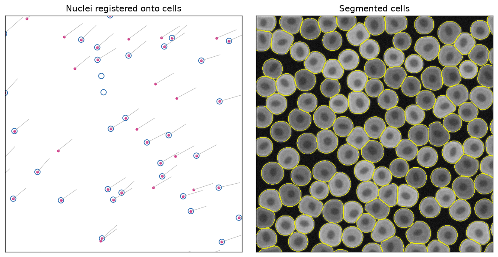

Quick start¶
In about ten minutes, on a laptop CPU, you will install SMINT, generate a small synthetic dataset, register post-stain nuclei onto spatial transcriptomics cells, and segment cells and nuclei across an image. Every command below was run as shown; the outputs are copied from that run.

flowchart LR
A[Install SMINT] --> B[Generate tutorial data]
B --> C[Register nuclei<br/>onto cells]
B --> D[Segment cells<br/>and nuclei]
C --> E[Look at the results]
D --> E1. Install¶
SMINT installs from GitHub. Cellpose 3 provides the built-in cyto3 and
nuclei models used here; the distributed extra adds Dask for tiled
segmentation.
python -m venv smint-env
source smint-env/bin/activate
git clone https://github.com/JurgenKriel/SMINT.git
cd SMINT
pip install -e ".[distributed]" "cellpose<4"
CPU-only machines
pip installs the CUDA build of PyTorch by default, which is large. On a
machine without an NVIDIA GPU, install the CPU build first:
pip install torch --index-url https://download.pytorch.org/whl/cpu.
You do not need STalign for this page; it is only used for sequential-section registration. See Installation for GPUs, STalign and napari.
2. Generate the tutorial data¶
From the repository root:
synthetic_wsi.ome.tif 1024 x 1024 px, 2 channels, 753 cells
synthetic_cells/nuclei.csv 4000 cells, 4601 nuclei
synthetic_st/sm.csv 9000 ST cells, 51565 SM pixels, 8 landmark pairs
written to .../SMINT/docs/tutorials/data
The script is deterministic and writes small files (a few MB in total) to
docs/tutorials/data/, next to de-identified real-data crops used by the
tutorials. The two you need now:
| File | Contents |
|---|---|
synthetic_cells.csv |
4,000 "Xenium" cell centroids, in µm (x_centroid, y_centroid) |
synthetic_nuclei.csv |
4,601 post-stain nuclei (centroid_x, centroid_y), offset by about 17 µm, slightly rotated and warped; 10% of cells have no nucleus and some nuclei have no cell |
synthetic_wsi.ome.tif |
A 1024 × 1024 px image, (C, Y, X): channel 0 nuclei, channel 1 cytoplasm, 753 cells |
3. Register nuclei onto cells¶
The nuclei were imaged on the same section as the cells, so each nucleus
belongs in one cell. SMINT finds the transform that puts them there
(multiround registration), then snaps confident pairs exactly onto their cell.
smint-alignment centroid \
--source docs/tutorials/data/synthetic_nuclei.csv \
--target docs/tutorials/data/synthetic_cells.csv \
--output-dir qs_registration --watch
Without --submit the job runs on this machine; --watch waits for it and
prints the report (shortened here):
submitted centroid via local (812900)
output dir: qs_registration
state: completed -- centroid round finished
{
"method": "multiround",
"n_matched": 2867,
"tre_initial": 12.383047602879103,
"tre_fit": 3.4414342530713062,
"tre_validation": 4.581062420235117,
...
"refinement": {
"n_assigned": 64,
...
"n_snapped": 3585,
...
"fraction_targets_matched": 0.91225,
...
}
{
"transformed_csv": "qs_registration/centroids_transformed.csv"
}
from smint.alignment import register_centroid_files
table, result = register_centroid_files(
"docs/tutorials/data/synthetic_nuclei.csv", # source: centroid_x, centroid_y
"docs/tutorials/data/synthetic_cells.csv", # target: x_centroid, y_centroid
output_path="nuclei_registered.csv",
)
print(f"held-out TRE {result['tre_initial'][0]:.1f} -> {result['tre_validation'][0]:.1f} um")
print(table["registration_status"].value_counts())
What this tells you. The target registration error (TRE) on nuclei held
out of the fit fell from 12.4 µm to 4.6 µm. 3,585 nuclei passed the
neighbourhood check and now sit exactly on a cell (snapped); 64 were paired
without that check (assigned, less certain); the rest moved with their
neighbours (filled), most of them nuclei with no cell. The output CSV keeps
every input column and adds x_transformed, y_transformed,
registration_status, target_index and neighbour_deviation.
Same-section registration
explains each of these and runs the same steps on real data.
4. Segment cells and nuclei¶
The image is cut into 512 px tiles with a 64 px overlap, segmented by two local CPU workers, and stitched, so cells on tile boundaries come out whole.
Save the settings as segmentation.yaml:
model_paths: [cyto3, nuclei]
cell_model_params: {diameter: 36, flow_threshold: 0.4, cellprob_threshold: 0.0, channels: [2, 1]}
nuclei_model_params: {diameter: 15, flow_threshold: 0.4, cellprob_threshold: 0.0, channels: [1, 0]}
chunk_size: 512
use_gpu: false
n_workers: 2
distributed:
backend: local
tile_overlap: 64
and run:
Save as segment.py and run python segment.py. The
if __name__ == "__main__": guard is needed because the local Dask
workers are separate processes.
from smint.segmentation import run_distributed_segmentation
if __name__ == "__main__":
results = run_distributed_segmentation(
image_path="docs/tutorials/data/synthetic_wsi.ome.tif",
output_dir="qs_segmentation",
cell_model="cyto3", nuclei_model="nuclei",
cell_params={"diameter": 36, "flow_threshold": 0.4,
"cellprob_threshold": 0.0, "channels": [2, 1]},
nuclei_params={"diameter": 15, "flow_threshold": 0.4,
"cellprob_threshold": 0.0, "channels": [1, 0]},
chunk_size=512, tile_overlap=64,
backend="local", n_workers=2, use_gpu=False,
)
print(results["total_cells"], "cells,", results["total_nuclei"], "nuclei")
channels is [main, nuclear], counted from 1, with 0 for none: cells are
found on channel 2 (cytoplasm) helped by channel 1 (nuclei); nuclei on channel 1
alone. Both forms log the same steps (shown without timestamps, and without
the model and Dask dashboard lines):
Tiles: 4 of 512 px, 64 px overlap
2 worker(s) ready
Tile 1/4 (0, 512, 512, 1024): 250 cells, 245 nuclei
Tile 2/4 (0, 0, 512, 512): 257 cells, 254 nuclei
Tile 3/4 (512, 0, 1024, 512): 236 cells, 225 nuclei
Tile 4/4 (512, 512, 1024, 1024): 267 cells, 257 nuclei
Stitching 981 nucleus outlines
Stitched 981 polygons: 753 after merging, 753 after trim/remove
26 of 1010 cell outlines touch no nucleus and were dropped
Stitching 984 cell outlines
Stitched 984 polygons: 753 after merging, 753 after trim/remove
Reconciled 753 cells / 753 nuclei -> 753 cells / 753 nuclei
753 cells -> qs_segmentation/cells_outlines.csv
753 nuclei -> qs_segmentation/nuclei_outlines.csv
Done in 1.1 min
The tiles report 1,010 cell outlines between them because cells near a
boundary are seen by two tiles; after stitching, all 753 cells in the image
are found once each. qs_segmentation/ now holds:
| File | Contents |
|---|---|
cells_outlines.csv, nuclei_outlines.csv |
One row per outline vertex: global_cell_id, x, y (pixels) |
cells_summary.csv, nuclei_summary.csv |
One row per object: centroid, area, and which cell each nucleus is in |
cells.zarr, nuclei.zarr |
Full-resolution label masks |
distributed_seg_<time>.log |
The log |
5. Look at the results¶
This script draws the figure at the top of the page from the two outputs (run it from the repository root after both steps):
import matplotlib.pyplot as plt
import pandas as pd
import tifffile
cells = pd.read_csv("docs/tutorials/data/synthetic_cells.csv")
nuclei = pd.read_csv("nuclei_registered.csv") # Command line tab: "qs_registration/centroids_transformed.csv"
image = tifffile.imread("docs/tutorials/data/synthetic_wsi.ome.tif")
outlines = pd.read_csv("qs_segmentation/cells_outlines.csv")
fig, (left, right) = plt.subplots(1, 2, figsize=(10, 5))
# Registration: each nucleus moved from its original position (line) onto a cell
left.scatter(cells.x_centroid, cells.y_centroid, s=60, facecolors="none", edgecolors="#2b6cb0")
for _, n in nuclei.iterrows():
left.plot([n.centroid_x, n.x_transformed], [n.centroid_y, n.y_transformed], color="0.7", lw=0.6)
left.scatter(nuclei.x_transformed, nuclei.y_transformed, s=8, color="#d53f8c")
left.set(xlim=(900, 1100), ylim=(1100, 900), aspect="equal", title="Nuclei registered onto cells")
# Segmentation: stitched cell outlines over the cytoplasm channel
right.imshow(image[1], cmap="gray")
for _, cell in outlines.groupby("global_cell_id"):
right.plot(cell.x, cell.y, color="yellow", lw=0.6)
right.set(xlim=(0, 400), ylim=(400, 0), title="Segmented cells")
for ax in (left, right):
ax.set_xticks([]); ax.set_yticks([])
plt.tight_layout()
plt.savefig("quickstart.png", dpi=120, bbox_inches="tight")
Next steps¶
-
Segment a whole slide
Chunked segmentation with
process_large_image, on the synthetic image and a real 3-channel crop. -
Same-section registration
Read the rounds log, the held-out checks, the statuses and
neighbour_deviation, on synthetic and real data. -
Sequential-section registration
Orientation search, landmarks and STalign LDDMM for spatial metabolomics onto spatial transcriptomics.
-
Distributed segmentation
Tiles, overlap, stitching and SLURM GPU workers.
Using your own data? Start from The SMINT workflow and Choosing a registration method.